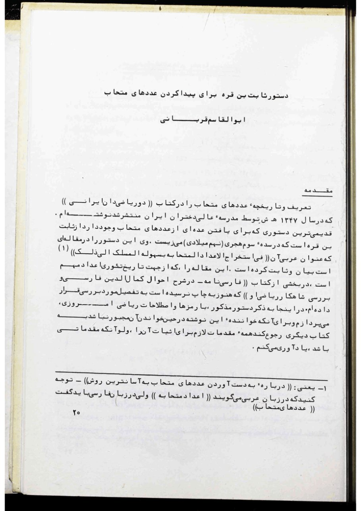
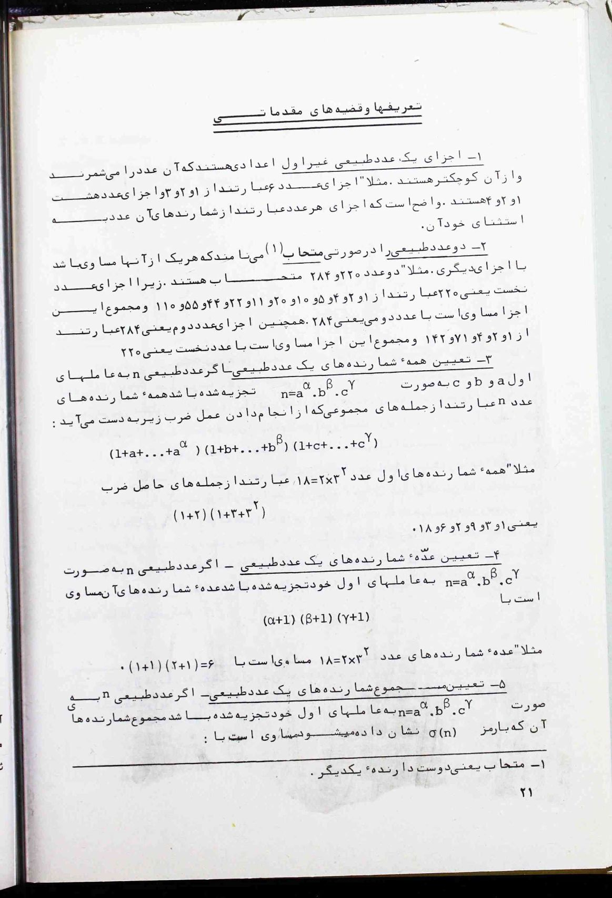
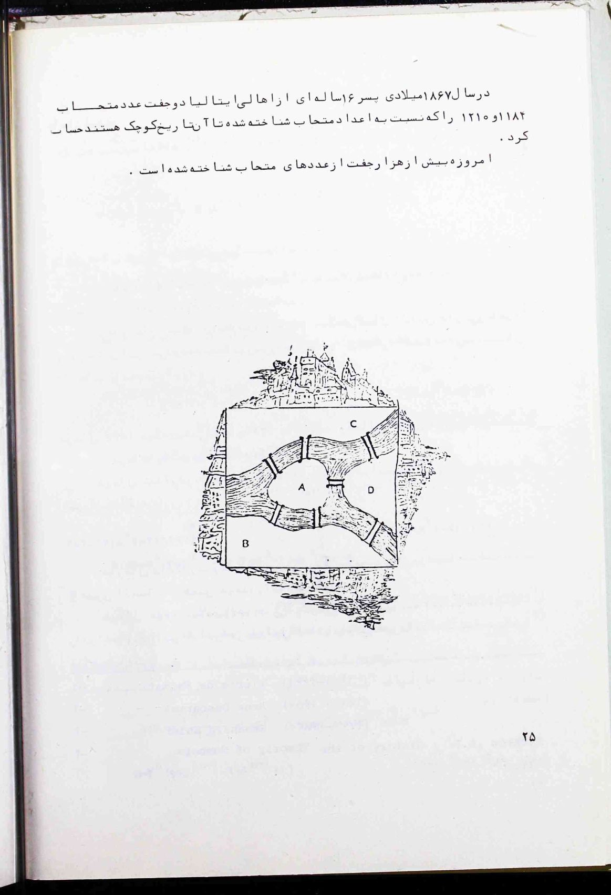

Thābit ibn Qurra’s Rule for Finding Amicable Numbers
The oldest known rule for producing amicable numbers, stated and proved in the ninth century — and set out here, in 1983, by the great historian of Persian mathematics. Given in full, in Persian and English, now interactive, with an afterword on everything that has happened to the friendly numbers since.

I have written the definition and the history of the amicable numbers in the book Two Iranian Mathematicians, published in 1347 [1968] by the Iran Girls’ College. The oldest rule in existence for finding a family of amicable numbers is due to Thābit ibn Qurra, who lived in the third century AH (the ninth century CE). He stated and proved this rule in a treatise whose Arabic title is Fī istikhrāj al-aʿdād al-mutaḥābba bi-suhūlat al-maslak ilā dhālik.1 That treatise — important for the history of the theory of numbers — I have examined in detail in a part of the book Fārsī-nāma: on the life of Kamāl al-Dīn Fārisī and a study of his mathematical masterpiece, which has not yet been printed. Here I shall present the rule in today’s mathematical symbols and terms; and so that the reader of this piece need not turn to any other book while reading it, I shall recall all the preliminaries required for its proof, however elementary they may be.
Definitions and preliminary theorems
1 — The parts of a natural number that is not prime are the numbers that measure it and are smaller than it. For example, the parts of the number 6 are 1, 2 and 3, and the parts of the number 8 are 1, 2 and 4. Clearly the parts of any number are its divisors, with the exception of the number itself.
2 — Two natural numbers are called amicable2 when each of them equals the sum of the parts of the other. For example, the two numbers 220 and 284 are amicable: the parts of the first number, 220, are 1, 2, 4, 5, 10, 11, 20, 22, 44, 55 and 110, and the sum of these parts equals the second number, 284. Likewise the parts of the second number, 284, are 1, 2, 4, 71 and 142, and the sum of these parts equals the first number, 220.
3 — Finding all the divisors of a natural number — If the natural number \(n\) has been decomposed into its prime factors \(a\), \(b\) and \(c\) in the form \(n = a^{\alpha}\, b^{\beta}\, c^{\gamma}\), then all the divisors of \(n\) are the terms of the collection obtained by carrying out the multiplication
For example, all the divisors of the number \(18 = 2\times 3^{2}\) are the terms of the product \((1+2)(1+3+3^{2})\), namely 1, 3, 9, 2, 6 and 18.
4 — Finding the number of divisors of a natural number — If the natural number \(n\) has been decomposed into its prime factors in the form \(n = a^{\alpha}\, b^{\beta}\, c^{\gamma}\), the number of its divisors equals
For example, the number of divisors of \(18 = 2\times 3^{2}\) equals \((1+1)(2+1) = 6\).
5 — Finding the sum of the divisors of a natural number — If the natural number \(n\) has been decomposed into its prime factors in the form \(n = a^{\alpha}\, b^{\beta}\, c^{\gamma}\), the sum of its divisors, denoted by the symbol \(\sigma(n)\), equals
For example, the sum of the divisors of the number \(18 = 2\times 3^{2}\) equals
6 — A special case — If one of the exponents \(\alpha\), \(\beta\), \(\gamma\) — say \(\beta\) — equals 1, then in place of \(\dfrac{b^{2}-1}{b-1}\) we write \(b+1\).
7 — Finding the sum of the parts of a natural number — The sum of the parts of any natural number \(n\) equals the sum of its divisors, \(\sigma(n)\), minus the number itself. If we denote the sum of the parts of the natural number \(n\) by the symbol \(S(n)\), we shall have:
A rule for finding a family of amicable numbers
If the three numbers
are all prime, then the two numbers below will be amicable:
Thābit ibn Qurra wrote this theorem in lengthy Arabic sentences; for its proof he set out nine preliminary propositions, and he used the method of the ancients, who considered line segments in place of numbers. Using the preliminaries above, his theorem can be proved in the following way (perhaps a simpler proof may yet be found):
(a) Proof that the sum of the parts of \(K\) equals \(H\). By what was said in No. 6 — since, in the decomposition of \(K\), the exponent of the prime factor \(9\times 2^{2n-1}-1\) is one — we have:
Therefore
and, taking into account that \(9\times 2^{3n} - 9\times 2^{3n-1} = 9\times 2^{3n-1}\), we have:
But the quantity inside the parentheses can be written thus:
Therefore
and this is exactly what we wished to prove.
(b) Proof that the sum of the parts of \(H\) equals \(K\). By rule No. 5, and taking No. 6 into account — since, in the decomposition of \(H\), the exponent of each of the prime factors \(3\times 2^{n-1}-1\) and \(3\times 2^{n}-1\) is one — we have:
and, taking into account that
we obtain:
and this is exactly what we wished to prove.
Some examples of amicable numbers
The Greeks attributed the discovery of the two amicable numbers 220 and 284 to Pythagoras.
Around the year 700 AH (corresponding to 1300 CE), Kamāl al-Dīn Fārisī — the Iranian mathematician and student of optics — obtained the two amicable numbers below in the treatise Tadhkirat al-aḥbāb fī bayān al-taḥābb:
In the year 1636 — that is, some 336 years after Kamāl al-Dīn Fārisī — the Frenchman Fermat3 computed these same two numbers.
Two years after Fermat, in 1638, the Frenchman Descartes4 found the two amicable numbers below:
At the same time as Descartes — and perhaps a little before him — Mullā Muhammad Bāqir Yazdī, the author of the book ʿUyūn al-ḥisāb, obtained these same two numbers.
In the year 1750 (1164 AH), the Swiss Euler5 compiled a list of 62 pairs of amicable numbers (you will find these numbers in the first volume of the History of the Theory of Numbers, by Dickson6).
In the year 1867, a sixteen-year-old boy from Italy computed the amicable pair 1184 and 1210 — small numbers, compared with the amicable numbers known up to that date.
Today, more than a thousand pairs of amicable numbers are known.
1. That is: “On the derivation of amicable numbers by an easy path.” Note that in Arabic one says aʿdād mutaḥābba, while in Persian one should say ʿadad-hā-ye motaḥāb.
2. Motaḥāb means “loving one another.”
3. Pierre de Fermat (1601–1665).
4. René Descartes (1596–1650).
5. Leonhard Euler (1707–1783).
6. Dickson, L. E.: History of the Theory of Numbers.


Ghorbani closed with a count: more than a thousand pairs. Forty-odd years later the count reads differently. Distributed-computing searches have since found every amicable pair whose smaller member is below \(10^{21}\), and the running list — kept by Sergei Chernykh, fed by volunteers’ computers around the world — holds more than 1.2 billion pairs. The largest known pair has over 56,000 digits. Against that flood, one thing has not moved at all: the only values currently known to make Thābit’s rule work are \(n = 2, 4, 7\) — the three pairs of this article; no fourth has been found. Euler generalised the rule in the eighteenth century, and for his generalisation, too, only two further cases are known.
Euler increased the number of genuine known pairs from three to sixty-two, although his published tables also contained duplicate and erroneous entries; two purported pairs were rejected in the early twentieth century. And the sixteen-year-old boy from Italy now has a name. In 1866–67, B. Nicolò I. Paganini — not to be confused with the violinist — computed his little pair (1184, 1210), sitting just past the ancients’ (220, 284); it had been overlooked by everyone: by Thābit’s rule (it cannot produce it), by Fermat, by Descartes, and by Euler himself.
History has kept moving backwards as well as forwards. The historian Jan Hogendijk has argued, from the text of Thābit’s treatise, that Thābit himself very likely knew the pair 17296 and 18416 — six centuries before Kamāl al-Dīn Fārisī derived it. And Fārisī, it turns out, had a contemporary companion: Ibn al-Bannāʾ of Marrakesh obtained the same pair at almost the same time, at the other end of the Islamic world. The pair Europe long credited to Fermat had been found — twice, perhaps three times — centuries earlier.
What nobody knows is almost everything else. Are there infinitely many amicable pairs? Unknown. Does a pair exist with one number even and one odd? None has been found. Do two coprime amicable numbers exist? None is known — and if such a pair exists, the product of its members must exceed \(10^{67}\). Every single known pair shares a prime factor. The one deep general theorem is austere: Erdős proved in 1955 that the amicable numbers have density zero — friendship, among numbers, is rare.
The friendship also comes in longer rings. Follow the sum of parts again and again — \(n \to S(n) \to S(S(n)) \to \cdots\) — and a perfect number is a loop of length one, an amicable pair a loop of length two. In 1918 Paul Poulet found loops of length five and twenty-eight; such numbers are now called sociable. And some chains guard their secret completely: nobody knows whether the chain starting at 276 ever comes home.
One last note, about the author. The Fārsī-nāma that this article mentions as “not yet printed” did reach print, and Abulghasem Ghorbani (1912–2001) — a schoolteacher before he was a historian — went on to complete the work he is best known for, the Biographies of the Mathematicians of the Islamic Period. The Iranian Mathematical Society, whose journal first carried the article you have just read, today awards a prize in his name to the best writing on the history of mathematics. This article is an early specimen of exactly that tradition.
Sources
- Abulghasem Ghorbani. «دستور ثابت بن قره برای پیدا کردن عددهای متحاب.» Farhang va Andisheh-ye Riāzi (فرهنگ و اندیشهٔ ریاضی), No. 3 (1362 [1983]), pp. 20–25. Iranian Mathematical Society.
- L. E. Dickson. History of the Theory of Numbers, Vol. I: Divisibility and Primality. Washington, 1919.
- J. P. Hogendijk. “Thābit ibn Qurra and the pair of amicable numbers 17296, 18416.” Historia Mathematica 12 (1985), 269–273.
- W. Borho. “On Thabit ibn Kurrah’s formula for amicable numbers.” Mathematics of Computation 26 (1972), 571–578.
- L. Euler. “De numeris amicabilibus” (1750). English translation: On Amicable Numbers, trans. Jonathan David Evans, School of Mathematical Sciences, Lancaster University.
- S. Chernykh. Amicable pairs list — the running database of all known pairs, sech.me/ap.